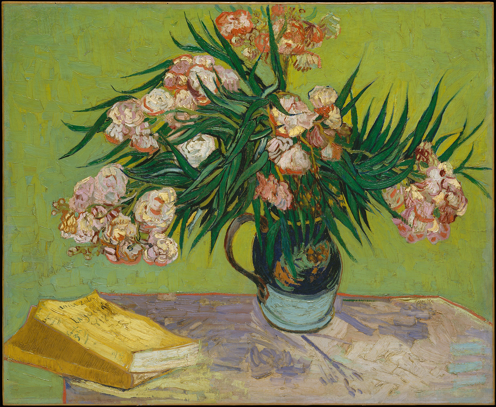

作品名 「夾竹桃と本のある静物」
花言葉 「油断大敵」「危険な愛」「用心」
キョウチクトウ
「油断大敵」
キョウチクトウ（夾竹桃）は常緑の中低木で、葉は厚く長楕円形、形状は竹の葉に似ている。庭園樹や街路樹に使われるが、中毒事例がある有毒植物としても知られており、強力な毒成分が含まれ、キョウチクトウを燃やして出た煙にも残る。キョウチクトウに強い毒性があることに由来して「油断大敵」「危険な愛」「用心」という花言葉が付けられました。
夾竹桃と本のある静物
フィンセント・ファン・ゴッホ
ゴッホは、印象派の感性的な花に物足りなさを感じた。ゴッホは、花に象徴的な意味を求めた。「キョウチクトウ」には、鮮やかなコントラストを成す丸みを帯びた赤い花とシャープな緑の葉、そして、キョウチクトウの脇に置かれている本はエミール・ゾラの小説『生きる喜び』です。ゴッホが「闇の中に光を射す本」として、愛読していた大事な一冊でした。南仏の明るい太陽の下で嬉々として制作に励むゴッホの"生きる喜び"に溢れた作品です。
| 作品名 | 夾竹桃と本のある静物 |
| 作者 | フィンセント・ファン・ゴッホ |
| 制作年 | 1888年 |
| 種類 | キャンバス・油彩 |
| 寸法 | 60.3×73.7cm |
| 所蔵 | メトロポリタン美術館 |